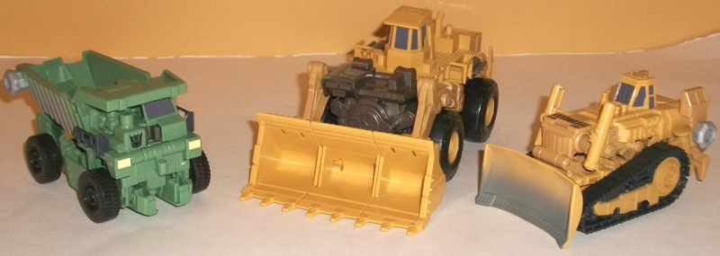
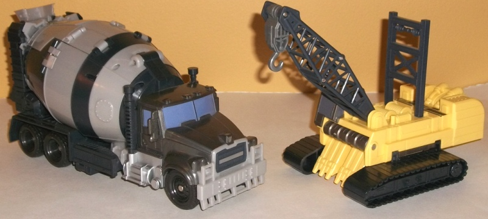
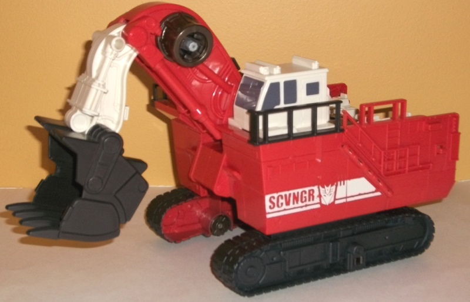
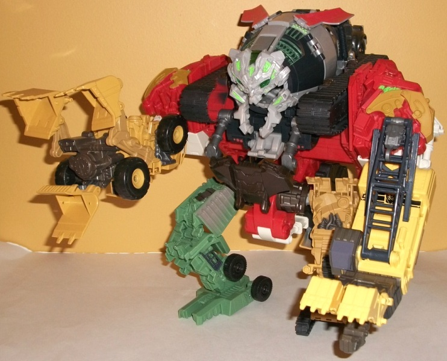

Constructicon
Devastator (RotF)
Constructicon
Devastator (RotF)
Allegiance
: Decepticon
Size
: Extra-Colossal-Supreme (for
lack of a better word... ~$90-$100 U.S., depending upon the store)
Difficulty of Transformation
: Medium
Color Scheme
: Yellow, dull mustard
yellow, dull milky grayish brown, black, light milky gray, off-white, reddish
orange, dull milky gray, and some dull metallic purplish blue, transparent
green, silver, bright light green, metallic gunmetal gray, and muddy brownish
gray
Rating
: 6.6


For safety and budget
reasons (and to many fans' dismay), Devastator's individual components
do NOT have their own robot modes, but rather go straight from vehicle
to part of the massive gestalt robot. So I'll cover the vehicles individually
first, then move onto the robot:
Rampage the bulldozer
is one of the smallest, and for good reason, since size-wise he should
be. He's got some great mold detailing, with pistions, bolts, and treads
everywhere, and his paint detailing, while it could use a few more bits
here and there, is serviceable, with all the "necessary" details like the
interior of the treads, the windows, and a silver "worn" fade paint app
on his shovel being used. He's also got a "caution" Decepticon-emblemed
stripe near the front of his vehicle. His proportions are off, though--
it's like the actual bulldozer were squished together a bit, so it's a
bit taller and not as wide as it should be. He also has a large gray knob
sticking out the rear left side of the vehicle that connects him to Devastator's
waist. It definitely looks the most "off" out of the individual vehicle
modes because of these problems, unfortunately. Rampage's shovel can move
up and down SLIGHTLY, but not much, sadly. He's mostly just a brick on
wheels.
Long Haul is the dump
truck, and he's definitely severely undersized-- this is supposed to be
a HUGE model dump truck, and it's the same size as Rampage! The dull green
color, while hardly eye-catching, does help to set him a bit apart from
the rest of the Constructicons and at least ties Devastator's color scheme
a
little bit
to G1. His proportions are okay, but the foot part
of him sticks out a bit on the underside-- also, he's got a big gray knob
near the rear of the vehicle, just like Rampage. His mold detailing, as
with the others, is excellent, though, and his paint detailing is adequate,
with most of the front detials such as headlights and windows painted,
with a nice brown "mud" fade on the rear half of the vehicle.
Scrapper is the wheel
loader, and is a bit oversized compared to most of the other vehicle components.
By itself, though, the proportions are pretty solid, so no complaints there.
His mold detailing is excellent, with rivets and bolts everywhere, but
his paint detailing almost non-existent-- only a Decepticon symbol, a few
othe rminor details, and his windows are painted. He could REALLY use some
silver on his rails or something-- but at least his core color scheme of
dull
yellow, dull brown, and black isn't clashy, though it certainly isn't exciting,
either. The biggest disappointment I have with Scrapper is that his shovel
can't move due to his transformation, which is a bit oversight given his
size.
Hightower the crane
is probably a bit undersized compared to the others. Like most of the other
vehicles, he has almost no paint apps (just a Decepticon logo and stripe
near his back end and his windows painted), but he's got quite a bit of
mold detailing. Somce nice pistons, coils of "string", and the like are
all present. His treads are a bit wide, and his back end sort of "hangs
out" behind the vehicle a bit, but otherwise proportionally it's a job
well done. I really wish Hightower had some sort of heavy-duty string connecting
his crane arm to his main body, though. It doesn't look complete without
any. The crane arm and hook can move where they meet the base of their
respective components, at least. As far as his color scheme goes, it's
serviceable but the yellow could've been a bit darker.
Mixmaster is the *ggrrrrmbl*
cement truck, and before I get to *ggrrrrmbl* rest of the figure, I have
to point *ggrrrrmbl* out that his "moving" sound effect *ggrrrrmbl* goes
off ALL. THE. *ggrrrrmbl* TIME. The slightest movement even against the
TABLE IT'S ON and *ggrrrrmbl* there it goes. And I can't for the life of
me figure out how to un-do it without taking the electronics out-- and
I don't want to, as Devastator's robot mode electronics are awesome (more
on that later)! It's probably the most annoying aspect of the figure, this.
As for the toy itself, it's the most ridiculously oversized compared to
the bunch, being the second-biggest of all the vehicles yet just being
a mere cement truck, he should be about on par with Rampage in terms of
size, maybe even smaller! His cement drum is also really oversized to the
point where it looks like it's about to explode, due to all those turbine
electronics being hidden in there. The front part of the vehicle is serviceable,
at least, though he could use some more paint apps-- silver steps under
the door and painted windows aren't enough for a vehicle this big. His
mold detailing, while adequate, is also easily the least impressive of
the individual components', really getting simplistic in particular when
you get to that darn cement drum. His color scheme of dark gray and light
gray is boring, hardly noteworthy. He's definitely my least favorite of
the individual vehicles, primarily because of *ggrrrrmbl*. (As a side note,
the toy makes a G1 transformation noise when you convert it to Devastator's
head.)


Scavenger is the excavator,
and MAN is he huge. He's like, twice the size of even Mixmaster (though
because he's mostly hollow, he actually weighs about the same). If it were
to actually transform into an actual individual robot, it would be a Leader-sized
toy easily, if not a little larger. The orange/white/gray color scheme
helps to differentiate him from the other Constructicons, and is fitting
for a construction vehicle to boot. The worn "SCVNGR" stripes on the sides
are a nice touch, but other than that and the windows he doesn't have any
paint detailing, which a toy this big is absolutely BEGGING for. It REALLY
becomes apparent with this guy just how much Hasbro skimped on the paint
apps for this guy. The mold detailing is pretty nice, particularly on the
top of the vehicle, though it can be a bit simplistic in plasces such as
the sides of the vehicle and the arm. (Also, at this size having the side
ladders merely being details etched into the side of the vehicle doesn't
cut it). His shovel arm can move at three points, so it can get a pretty
decent range of movement going. It does have two big unsightly knobs on
the side of it that are used for the hip joints, though. I wish his treads
were real rubber treads and not just with little wheels on the bottom--
for the price I'd expect something cool like that, plus there's no transformational
reason for why he couldn't have them. Oh, one last thing-- the gray part
of the guard rails on the top of Scavenger are seperate pieces, and they
can come off a bit too easily.
Devastator's robot mode
is definitely the highlight of the figure. It's MASSIVE-- not necessarily
in height so much as in all three dimensions. It's easy to find a Leader
class transformer that's taller than him, but he's almost as wide and deep
as he is tall, making for a truly weighty piece. It may be iffy regarding
some of the other stuff, but you are definitely getting your money's worth
of plastic here, folks. However, his proportions are a bit off, even given
Devastator's gorilla-ish proportions in the movie. His legs are too tall
proportionally and skinny-- again, even considering that they're supposed
to be smaller than his arms. His head is also way too large normally. The
face itself is about the right size, but the "head" extends back way too
far-- it's obviously just Mixmaster turned backwards. And therein lies
the main problem with this figure-- to adhere to safety standards these
days, a combiner that's this large has to be too simple in order to pass
the drop test. Scavenger's transformation has a few real steps to it, but
every other component's transformation is incredibly simple (even the legs,
though to their credit they look different enough even given that simplistic
transformation). Even without individual robot modes, the various vehicle
modes aren't "meshed" together nearly as well as I'd like in robot mode.
His articulation is also rather limited for a toy this large, only being
able to move at the shoulders (at two points), elbows (at two points),
at the base and middle-point of each claw (except for the "thumb" claw
on his left hand), and at the hips, knees, and ankles. Now, that may SEEM
like it has all the major points covered except the head and waist, but
his legs are extremely limited, moving only in one direction and not much
at that, if you want to keep this behemoth standing. His default height
is certainly at a very odd pose-- not straight enough to be humanoid, but
not hunched over enough to be walking similar to a gorilla like he was
in the movie--primarily due to his leg proprtions. And unfortunately to
his balance/weight distribution, you can't really move him from that much.
Devastator gains a bit more paint apps in this move, but not much-- his
shoulders are adequately detailed, and the green "energy" detailing on
his head is pretty neat, but other than that he's as bare as ever. His
vortex gimmick is extremely cool, however, and the highlight of the figure--
pull down on the gray tab in his chest, and his mouth will open to an almost
surreal circumference, with glowing circular alternating green lights going
off inside his mouth while his eyes proper light. He'll say many different
things, from grinder noises to machinery activating noises to evi laughter
actual sayings like "Devastator crush Autobots!" in fairly convincing-sounding
voice.
Constructicon Devastator's
main draws are his sheer size and his cool vortex grinder gimmick. However,
other than that, he's sadly disappointing for the prize and size-- he's
majorly lacking in paint apps, his vehicles generally aren't very impressive
and way out of scale with each other, and he has some overly odd proportions
and somewhat restricted articulation in robot mode. If you're able to get
him on deep discount, he might be worth it just for the size factor-- otherwise,
I can't see many people liking this behemoth.
Review by Beastbot